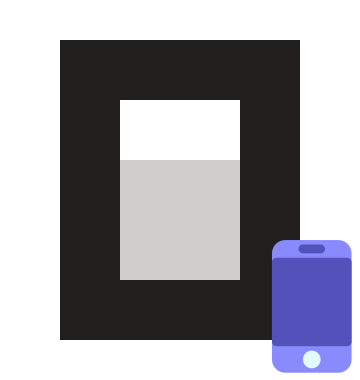

connect to your OpenCode servers on the go
💫 A lightweight mobile client that wraps the
OpenCode Web
UI as native Android and iOS apps. Connects to an already-running
OpenCode server over LAN or VPN / Tailscale.
Chat with the agent on your phone while the agent and the server run
on your computer and edit code and use all the tools available on it.
🖥️
OPENCODE_SERVER_PASSWORD)
prefers-color-scheme)
The app is a client that connects to a OpenCode web server running on the machine where you have your code and build tools. It needs a running web server to connect to.
# start a server without password
opencode web --hostname 0.0.0.0 --port 4096
export OPENCODE_SERVER_PASSWORD="your-secret-password"
opencode serve --hostname 0.0.0.0 --port 4096
When auth is enabled, the username defaults to
opencode in the app.